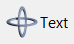
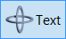
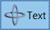
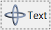

Creates an interface element that is a button, but it does not have native decorations. When selected, this element activates a function in the application. Its visual presentation can contain a text and/or an image.
It behaves just like an IupButton, but since it is not a native control it has more flexibility for additional options. It can also behave like an IupToggle (without the checkmark).
It inherits from IupCanvas.
Ihandle* IupFlatButton(const char *title); [in C]
iup.flatbutton{[title = title: string]} -> ih: ihandle [in Lua]
flatbutton(title) [in LED]
title: Text to be shown to the user. It can be NULL. It will set the TITLE attribute.
Returns: the identifier of the created element, or NULL if an error occurs.
Inherits all attributes and callbacks of the IupCanvas, but redefines a few attributes.
ALIGNMENT (non inheritable): horizontal and vertical alignment of the set image+text. Possible values: "ALEFT", "ACENTER" and "ARIGHT", combined to "ATOP", "ACENTER" and "ABOTTOM". Default: "ACENTER:ACENTER". Partial values are also accepted, like "ARIGHT" or ":ATOP", the other value will be obtained from the default value.
BACKIMAGE (non inheritable): image name to be used as background. Use IupSetHandle or IupSetAttributeHandle to associate an image to a name. See also IupImage.
BACKIMAGEHIGHLIGHT (non inheritable): background image name of the element in highlight state. If it is not defined then the BACKIMAGE is used.
BACKIMAGEINACTIVE (non inheritable): background image name of the element when inactive. If it is not defined then the BACKIMAGE is used and its colors will be replaced by a modified version creating the disabled effect.
BACKIMAGEPRESS (non inheritable): background image name of the element in pressed state. If it is not defined then the BACKIMAGE is used.
BGCOLOR: Background color. If text and image are not defined, the button is configured to simply show a color, in this case set the button size because the natural size will be very small. If not defined it will use the background color of the native parent.
BORDER (creation only): the default value is "NO". This is the IupCanvas border.
BORDERCOLOR: color used for borders. Default: "50 150 255". This is for the IupFlatButton drawn border.
BORDERPSCOLOR: color used for borders when pressed or selected. Default use BORDERCOLOR. (since 3.19)
BORDERHLCOLOR: color used for borders when highlighted. Default use BORDERCOLOR. (since 3.19)
BORDERWIDTH: line width used for borders. Default: "1". Any borders can be hidden by simply setting this value to 0. This is for the IupFlatButton drawn border.
SHOWBORDER: by default borders are drawn only when the button is highlighted, if SHOWBORDER=Yes borders are always show. When SHOWBORDER=Yes and BGCOLOR is not defined, the actual BGCOLOR will be a darker version of the background color of the native parent. (since 3.25)
CANFOCUS (creation only) (non inheritable): enables the focus traversal of the control. In Windows the button will respect CANFOCUS in opposite to the other controls. Default: YES.
PROPAGATEFOCUS(non inheritable): enables the focus callback forwarding to the next native parent with FOCUS_CB defined. Default: NO. (since 3.23)
EXPAND (non inheritable): The default value is "NO".
FGCOLOR: Text color. Default: the global attribute DLGFGCOLOR.
FITTOBACKIMAGE (non inheritable): enable the natural size to be computed from the BACKIMAGE. If BACKIMAGE is not defined will be ignored. When set to Yes it will set BORDERWIDTH to 0. Can be Yes or No. Default: No.
FRONTIMAGE (non inheritable): image name to be used as foreground. The foreground image is drawn in the same position as the background, but it is drawn at last. Use IupSetHandle or IupSetAttributeHandle to associate an image to a name. See also IupImage.
FRONTIMAGEHIGHLIGHT (non inheritable): foreground image name of the element in highlight state. If it is not defined then the FRONTIMAGE is used.
FRONTIMAGEINACTIVE (non inheritable): foreground image name of the element when inactive. If it is not defined then the FRONTIMAGE is used and its colors will be replaced by a modified version creating the disabled effect.
FRONTIMAGEPRESS (non inheritable): foreground image name of the element in pressed state. If it is not defined then the FRONTIMAGE is used.
HASFOCUS (read-only): returns the button state if has focus. Can be Yes or No. (since 3.21)
HLCOLOR: background color used to indicate a highlight state. Pre-defined to "200 225 245". Can be set to NULL. If NULL BGCOLOR will be used instead.
HIGHLIGHTED (read-only): returns the button state if highlighted. Can be Yes or No. (since 3.21)
IMAGE (non inheritable): Image name. Use IupSetHandle or IupSetAttributeHandle to associate an image to a name. See also IupImage.
IMAGEHIGHLIGHT (non inheritable): Image name of the element in highlight state. If it is not defined then the IMAGE is used.
IMAGEINACTIVE (non inheritable): Image name of the element when inactive. If it is not defined then the IMAGE is used and its colors will be replaced by a modified version creating the disabled effect.
IMAGEPRESS (non inheritable): Image name of the element in pressed state. If it is not defined then the IMAGE is used.
IMAGEPOSITION (non inheritable): Position of the image relative to the text when both are displayed. Can be: LEFT, RIGHT, TOP, BOTTOM. Default: LEFT.
PADDING: internal margin. Works just like the MARGIN attribute of the IupHbox and IupVbox containers, but uses a different name to avoid inheritance problems. Default value: "0x0".
PRESSED (read-only): returns the button state if pressed. Can be Yes or No. (since 3.21)
PSCOLOR: background color used to indicate a press state. Pre-defined to "150 200 235". Can be set to NULL. If NULL BGCOLOR will be used instead.
RADIO (read-only): returns if the toggle is inside a radio. Can be "YES" or "NO". Valid only after the element is mapped and TOGGLE=Yes, before returns NULL.
IGNORERADIO (non inheritable): when set the toggle will not behave as a radio when inside an IupRadio hierarchy. (since 3.21)
SPACING (non inheritable): spacing between the image and the text. Default: "2".
TITLE (non inheritable): Label's text. The '\n' character is accepted for line change.
TOGGLE: enabled the toggle behavior. Default: NO.
TEXTALIGNMENT (non inheritable): Horizontal text alignment for multiple lines. Can be: ALEFT, ARIGHT or ACENTER. Default: ALEFT. (since 3.22)
VALUE (non inheritable): Toggle's state. Values can be "ON", "OFF" or "TOGGLE". Default: "OFF". The TOGGLE option will invert the current state. Valid only when TOGGLE=Yes. Can only be set to ON for a toggle inside a radio, it will automatically set to OFF the previous toggle that was ON.
ACTIVE, FONT, EXPAND, SCREENPOSITION, POSITION, MINSIZE, MAXSIZE, WID, TIP, SIZE, RASTERSIZE, ZORDER, VISIBLE: also accepted.
Inherits all callbacks of the IupCanvas, but redefines a few of them. Including ACTION, BUTTON_CB, FOCUS_CB, LEAVEWINDOW_CB, and ENTERWINDOW_CB. To allow the application to use those callbacks the same callbacks are exported with the "FLAT_" prefix using the same parameters, except the FLAT_ACTION callback that now mimics the IupButton ACTION. They are all called before the internal callbacks and if they return IUP_IGNORE the internal callbacks are not processed.
FLAT_ACTION: Action generated when the button 1 (usually left) is selected. This callback is called only after the mouse is released and when it is released inside the button area.
int function(Ihandle* ih); [in C]
ih:action() -> (ret: number) [in Lua]
ih: identifier of the element that activated the event.
Returns: IUP_CLOSE will be processed.
VALUECHANGED_CB: Called after the value was interactively changed by the user. Called only when TOGGLE=Yes. Called after the ACTION callback, but under the same context.
int function(Ihandle *ih); [in C]
ih:valuechanged_cb() -> (ret: number) [in Lua]
ih: identifier of the element that activated the event.
MAP_CB, UNMAP_CB, DESTROY_CB, GETFOCUS_CB, KILLFOCUS_CB, ENTERWINDOW_CB, LEAVEWINDOW_CB, K_ANY, HELP_CB: All common callbacks are supported.
The IupFlatButton can contain text and image simultaneously.
The natural size will be a combination of the size of the image and the title, if any, plus PADDING and SPACING (if both image and title are present).
Borders are drawn only when the button is highlighted reproducing the behavior of the IupButton when FLAT=Yes.
Buttons are activated using Enter or Space keys.
When TOGGLE=Yes, To build a set of mutual exclusive toggles, insert them in a IupRadio container. They must be inserted before creation, and their behavior can not be changed.
When TOGGLE=Yes, the button that is a child of an IupRadio automatically receives a name when its is mapped into the native system. (since 3.16)
To replace a IupButton by a IupFlatButton you must change the function call (IupFlatButton does not includes the action callback in the constructor) and change the ACTION callback name to FLAT_ACTION.
To replace a IupToggle by a IupFlatButton you must do the same, and set TOGGLE=Yes. But notice that there will be no check box nor radio button.
Finally notice that the name of the secondary image attributes are different (for instance IMINACTIVE is IMAGEINACTIVE, IMPRESS is IMAGEPRESS, and so on). To define a button that only shows a color, do the same as in IupButton and don't define TITLE nor IMAGE, but instead of BGCOLOR use FGCOLOR to set the color of the button.
When the IupFlatButton displays only a text it will look like a label, use SHOWBORDER=Yes to force the display of the borders all the time.
The sample buttons have PADDING=5x5.
| Normal | Highlight | Press | Focus |
|---|---|---|---|
|  |  |  |  |